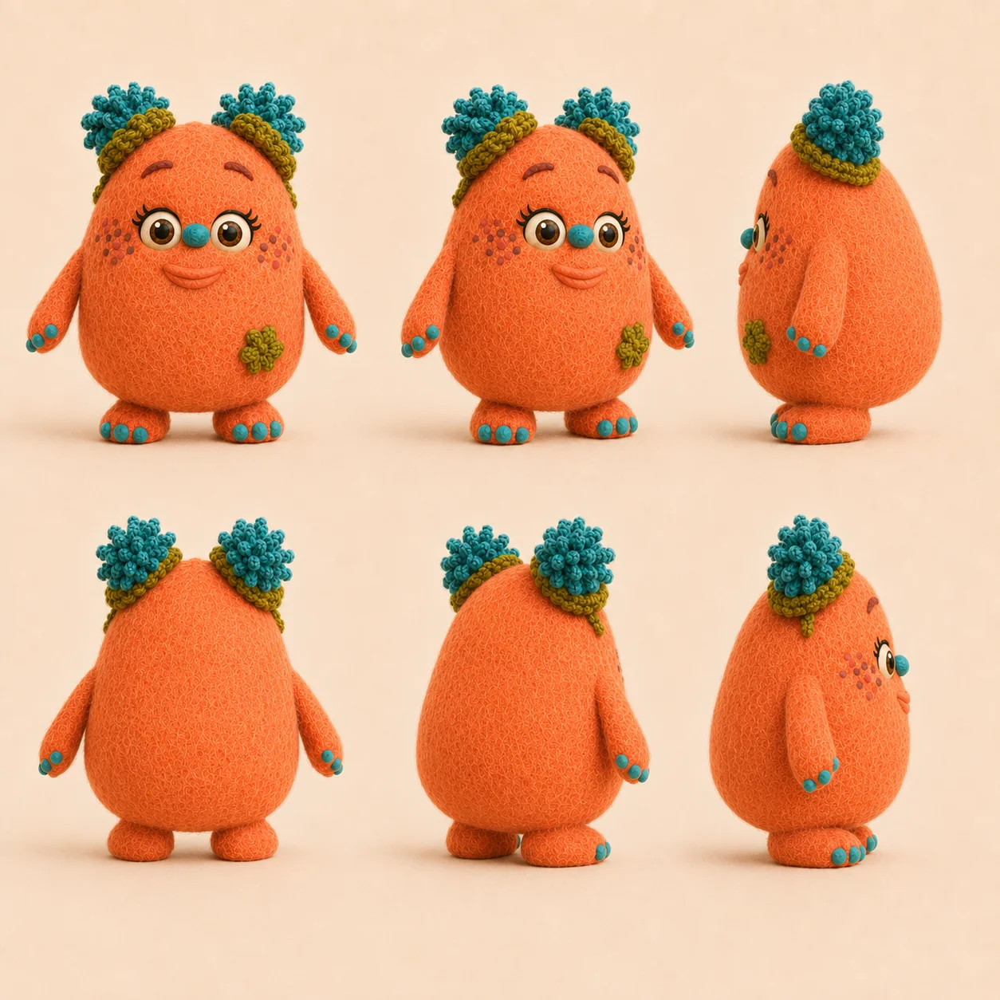
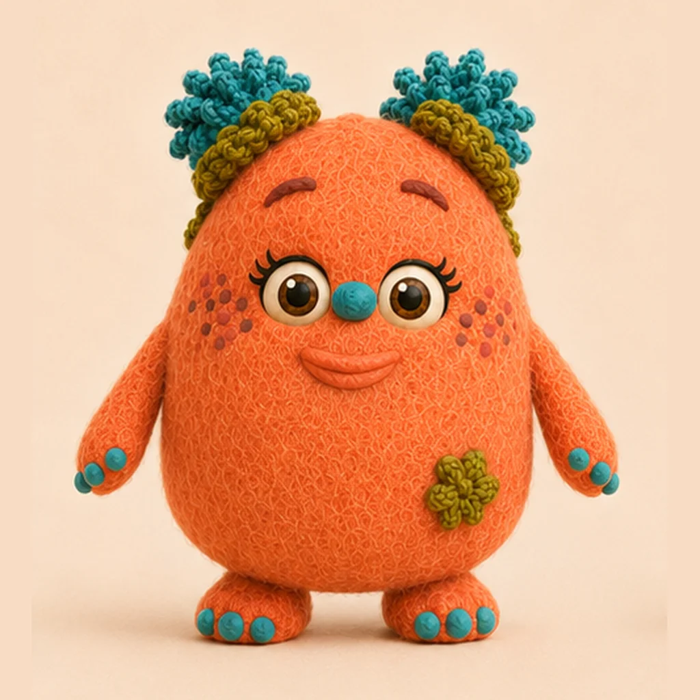
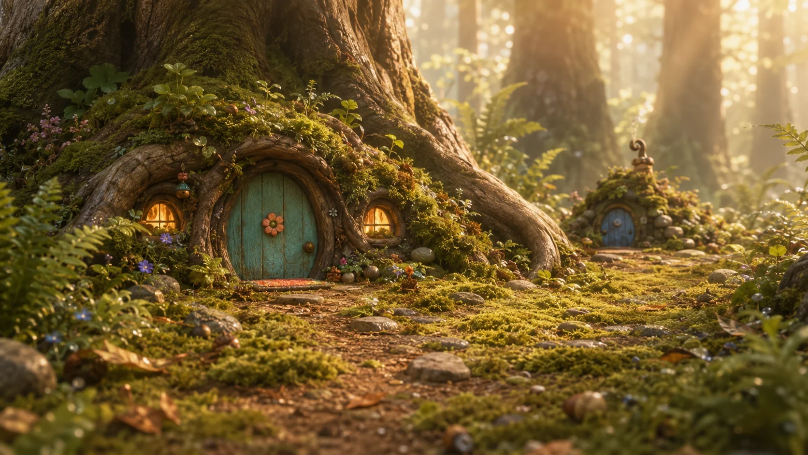
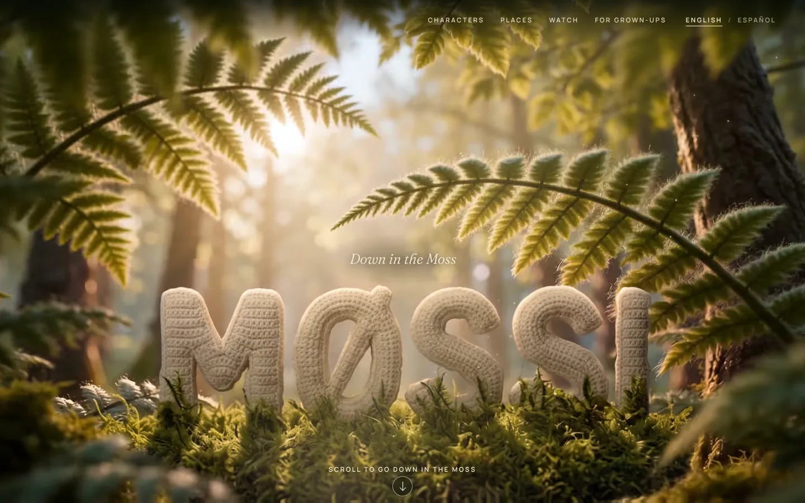
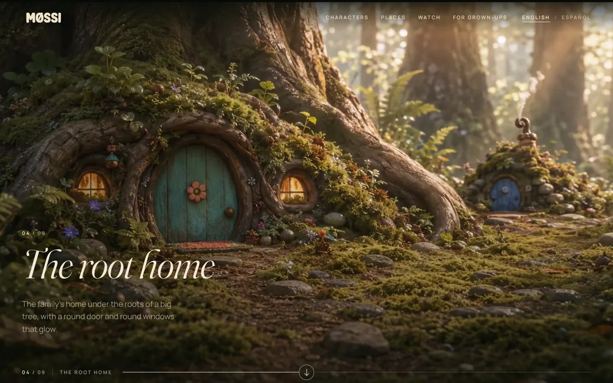
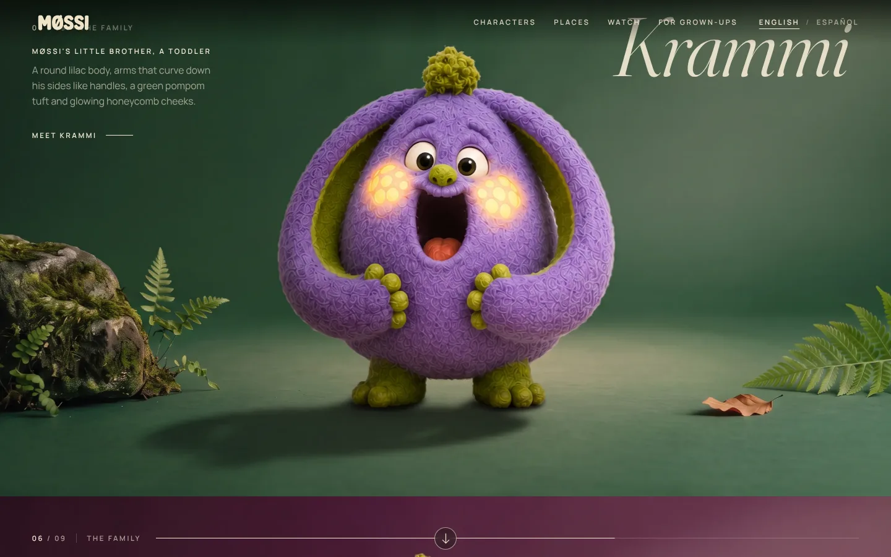

MØSSI
An animated preschool series, designed and built with AI, from the first character to the live website.
The challenge
Make a series that looks like handmade stop-motion without a studio, a crew or a puppet. AI video models are good at single beautiful shots and bad at continuity: characters change colour, gain ears, lose limbs and invent new friends from one clip to the next. The job was to turn that into a reliable production line for children's TV, in two languages.
Five characters, locked on model
Every character has an approved turnaround, a written trait block and a reusable AI element. Every prompt carries the full trait block, because the model drifts without it: Papa Pusti has exactly one ear, Krammi's curved shapes are arms, not ears, and Møssi is orange, never pink.
Family
Friend
The pipeline



Design and lock. I designed the characters in Higgsfield. Their turnaround sheets become reusable Higgsfield elements with a written trait block per character and a fixed set of four locations.
Record first. Every line is recorded in the character's locked voice (ElevenLabs) and transcribed to check it before any animation.
Edit, don't recreate. Each shot starts as an edit of an approved frame, then is animated in Seedance 2.0 with the recorded lines as audio references.
QC every clip. Frame sheets against the trait blocks, word-timed transcripts, silence scans, a colour grade per clip, then assembly.
Music. Original songs made in Suno play over the picture.
What I learned about AI video
- Native audio invents dialogue and voices. Always feed recorded lines.
- Two characters per clip, maximum. Ensemble moments are cut together from separate clips.
- Words are taken literally: "picture" draws a paper card, and a number in the prompt gets printed on the set.
- Camera pull-backs invent new scenery. Keep the camera still unless the story needs movement.
- Put key actions early: an action timed to the end of a clip shows up in the last half-second.
The website
downinthemoss.com is a cinematic scroll: you fly from the forest canopy down to the moss, through the root-home door and meet the family one by one. I designed and built it with Claude Code, in English and Spanish, with AI-generated flight segments and separate layouts for desktop and phone. Hosted on Cloudflare Pages.



Launch
The theme song is live on YouTube. MØSSI launches in two languages: Down in the Moss (English) and Entre el Musgo (Spanish), each with its own YouTube channel, Instagram and Facebook page.